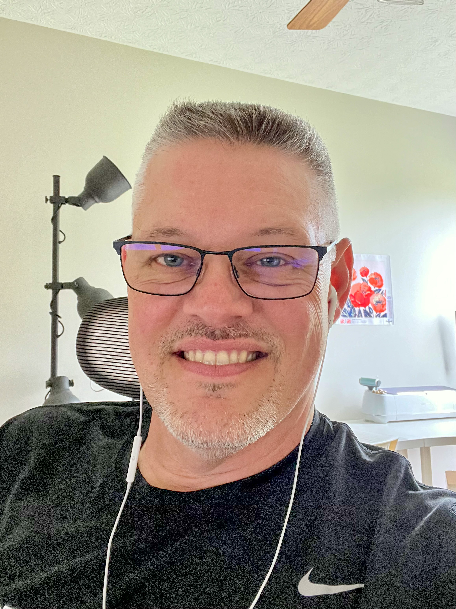

Information Technology Specialist
An experienced Client Services and Infrastructure Specialist with excellent technical and business competencies.
A fast and efficient problem-solver who applies business and technical perspectives to develop workable solutions to help move the business forward.
Motivated achiever who has consistently exceeded performance objectives.
Jan. 2019 - July 2023
Oct. 2006 - Jan. 2019
Oct. 1996 - Sept. 2006
July 2023 - Certified Scrum Master, Scrum Alliance